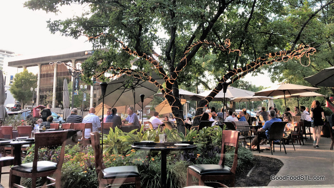
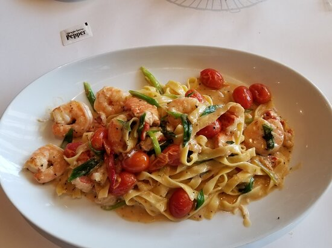
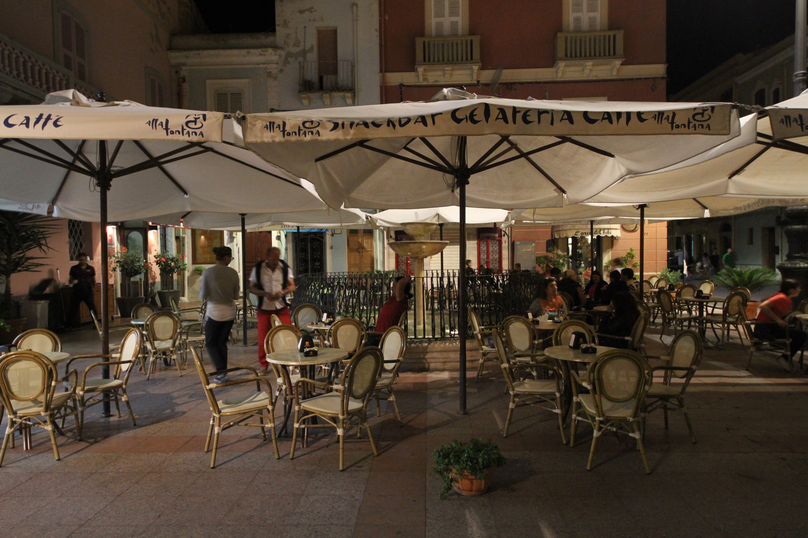
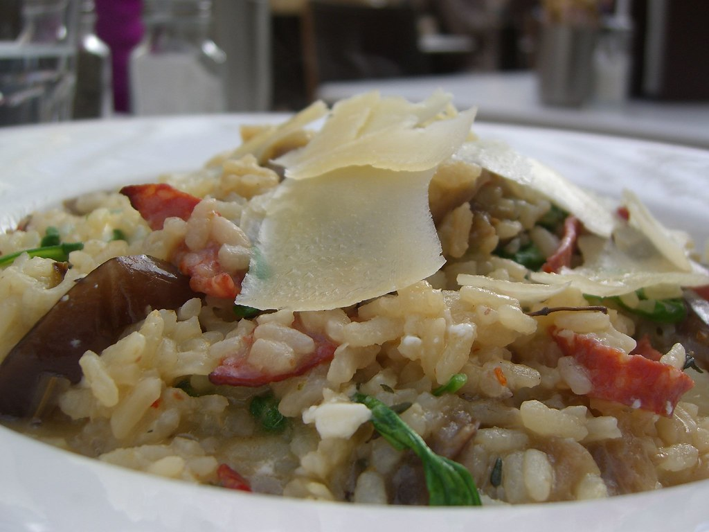
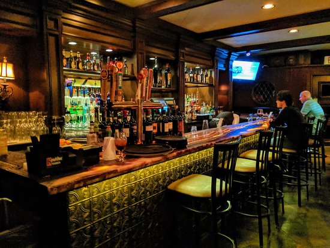

Famous Italian Restaurants
-

Cafe Napoli
RestaurantCafé Napoli is a family owned restaurant, established in 1989 by Tony and Kathy Pietoso. Quickly becoming a success, they moved the small basement restaurant to a larger location at the corner of Forsyth and Bemiston in the heart of Clayton. Bringing fresh ideas and innovation to the regional Italian specialties.
-

Brio Italian
GrilleBrio Frontenac is a premier Tuscan-inspired restaurant destination serving authentic, northern Italian cuisine, luxury wines & cocktails—our specialties include steaks, chops, seafood more.
-

Del Pietro's
RestaurantDel Pietro's is a casual affordable Italian restaurant serving fresh pastas, pizza, salads, antipasti, entrees, local beers, and a diverse wine list. It has pastas, Insalata, Antipasti and many more....
Fresh and good experience with fun. -

Sapore Italian Cafe
When I opened my doors in July of 2009, I committed to serving the freshest Italian dishes made from local and seasonal ingredients. I learned early the heart of Italian cooking is the flavor…or sapore. ~Ciao
-

Charlie Gitto's 'On The Hill'
Charlie Gitto’s On the Hill is a landmark for fine Italian dining in The Hill neighborhood of St. Louis. Longtime Italian spot with pizzas & toasted ravioli delivered in an old-world, elegant atmosphere.
-

Bar Italia
RistoranteFor authentic Italian cuisine come join us at Bar Italia Ristorante! Join us in the heart of the Central West End, but feel like you're in Italy! We serve upscale Italian unlike anything else you've had in Saint Louis...